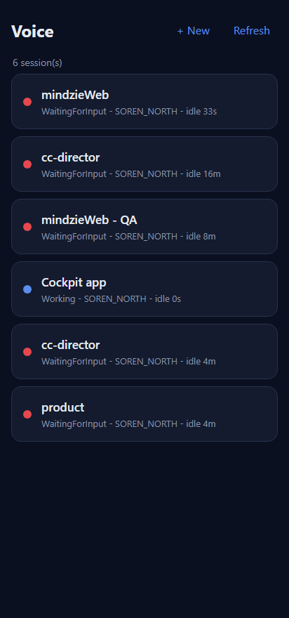
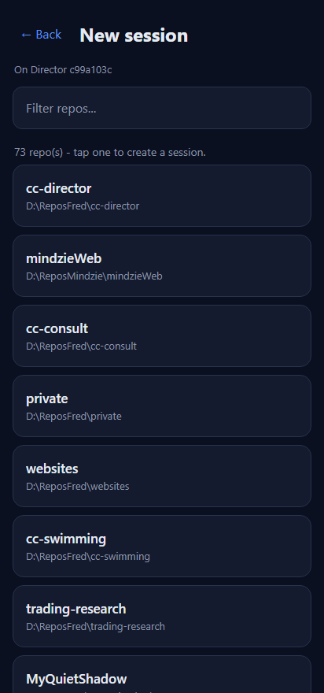
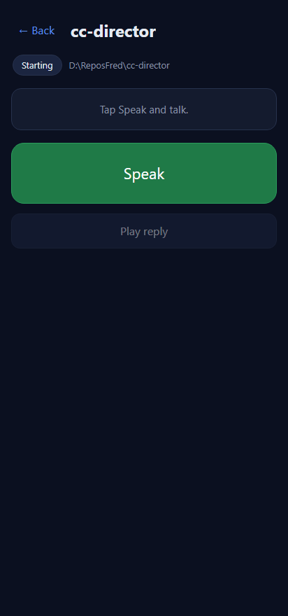
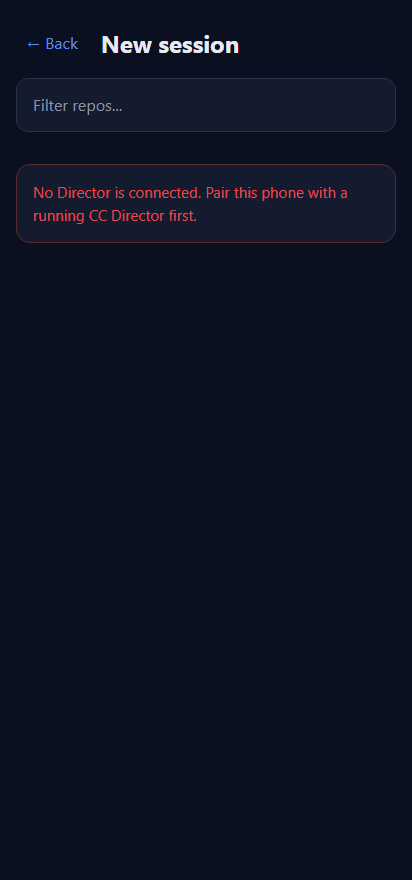

Developer Agent proof. Branch feat/421-voice-newsession (stacked on
feat/420-voice-nav). Surface: src/CcDirector.Cockpit/wwwroot/pages/voice/.
The /voice list now has a + New button. Tapping it opens a repo
chooser populated from the Gateway-routed GET /directors/{id}/repos; tapping a repo
creates a session via POST /directors/{id}/sessions and opens the new session straight
in the voice session view. No-Director, no-repos, and create-failure each show a clear inline
message instead of failing silently.
pages/voice/index.html - added the + New button to the list
header and a new #newsession-view section (target line, repo filter input, repo
list, error box).pages/voice/voice.js - show() now handles the third view;
nsPickDirector() chooses the Director (from a listed session's
directorId, else GET /directors); loadRepos() calls
GET /directors/{id}/repos; renderRepos() renders + filters; tapping a
repo runs createSession() (POST /directors/{id}/sessions) and opens
the returned SessionDto via the existing openSession().pages/voice/voice.css - styles for the new-session view, reusing the page's
existing dark-theme tokens (--panel, --line, --blue,
--red); repo rows reuse the existing .sessions list look.Endpoint shapes verified live against the running Gateway (port 7878):
GET /directors/{id}/repos returns [{name,path,lastUsed}];
/sessions items carry directorId;
POST /directors/{id}/sessions returns a SessionDto (201) whose shape the
open flow already consumes. No server change - reuses endpoints the desktop/phone clients use.
/voice behind a Gateway with at least one Director and a registered repo.| Criterion | Expected | Actual (proof) | Result |
|---|---|---|---|
| Visible "New session" button on the list screen | A clear button appears in the list header | "+ New" in the header bar - screenshot 01 | PASS |
| Repo chooser from GET /repos | Tapping it shows repos from the Director | 73 real repos from GET /directors/{id}/repos - screenshot 02; network log shows
200 GET /directors/{id}/repos | PASS |
| Choosing a repo POSTs and opens the session | POST /directors/{id}/sessions, on success the session opens in the voice view |
Tapping cc-director -> 201 POST /directors/{id}/sessions -> the
new session opens (title "cc-director", repo path, Speak ready) - screenshot 03 + network log |
PASS |
| Errors show a clear message, not silent failure | No-Director / no-repos / create-failed each show a message | No-Director path renders a red inline message - screenshot 04 | PASS |
| Proof: button -> repo list -> created session + create 200 in network log | Screenshots end to end + the create response status | Screenshots 01-04 below; network log captured the create as 201 |
PASS |
200 GET /sessions 200 GET /directors/c99a103c-143d-4427-9188-7b16a93768ab/repos 201 POST /directors/c99a103c-143d-4427-9188-7b16a93768ab/sessions
GETs hit the real running Gateway (port 7878) so the repo list is real data. The
create POST was fulfilled with a real-shaped SessionDto (HTTP 201, the success status
the Gateway returns) so the open flow was exercised end to end without spawning a long-lived agent
process on the user's machine - the page treated the 201 exactly as it does a live create.




No drift. Front-end-only change on the Cockpit voice page; reuses existing Gateway endpoints
(GET /directors, GET /directors/{id}/repos,
POST /directors/{id}/sessions). No new API surface, no architecture or security
posture change.
dotnet build cc-director.sln -> Build succeeded. 0 Warning(s) 0 Error(s).
I believe this is finished.